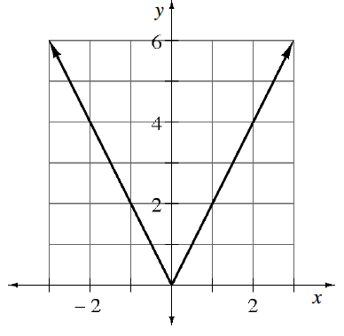
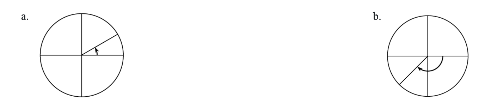

.figure-full image option. Homework Help text omitted. Figure filenames now use hyphens. Code comments included for easier editing.For each part below, sketch a graph that satisfies the given properties.
Even, passes through \((2,5)\), is increasing for \(x<-1\)
Odd, passes through \((-3,4)\), has a maximum at \((1,7)\)

Below are two of the special angles that are used in the unit circle. Identify the radian measure for the angles shown. Remember counterclockwise angles are positive and clockwise angles are negative.

A trundle wheel (a wheel attached to the end of stick) is used to measure distance. As you walk with the wheel on the ground, it makes a click after each revolution.
If the wheel has a radius of one foot, what is the exact distance for one revolution?
What would the radius need to be so that each revolution is equal to exactly \(10\) feet?
Without using a calculator, determine if each of the given functions is increasing or decreasing on the interval \(x=1\) to \(x=2\). Verify your answer by sketching the graph.
Compute without a calculator
\(f(x)=x^2\)
\(g(x)=-2x+1\)
\(h(x)=1-x^3\)
Salvador wants to evaluate \(81^{3/4}\). He knows that \(3^4=81\), so he substitutes and uses the power property for exponents: \(81^{3/4}=(3^4)^{3/4}=3^3=27\). Use Salvador’s technique to evaluate each of the following expressions.
Compute without a calculator
\(81^{-3/4}\)
\(27^{2/3}\)
\(\left(\frac{125}{64}\right)^{2/3}\)
\(\left(\frac{1}{9}\right)^{-1/2}\)
What equation will result in the graph of the parabola \(y=x^2\)being shifted down \(4\) units?
Kyla and Sergio are in a race to see who can eat an ice cream cone the fastest. Kyla is confident that she will win, so she gives Sergio a five-second head start. If \(t=\) elapsed time in seconds since Sergio started eating his ice cream, write an expression, using \(t\), for the amount of time elapsed since Kyla started eating her ice cream. Then sketch a possible time vs. amount of ice cream eaten graph.
Solve each equation for \(x\).
\(x^2+3x=0\)
\(x^2+b=7\)